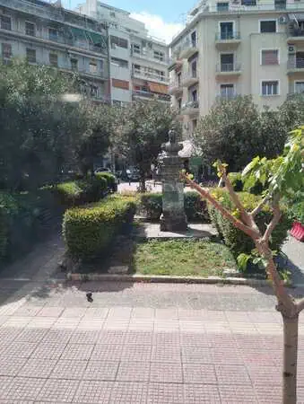
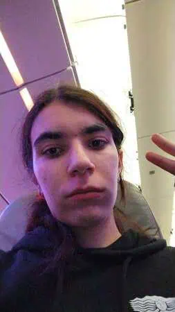
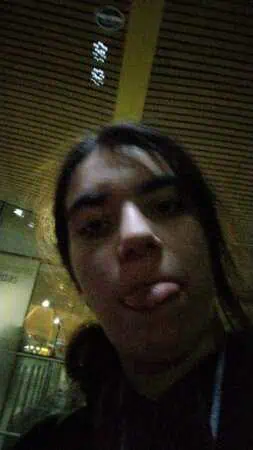
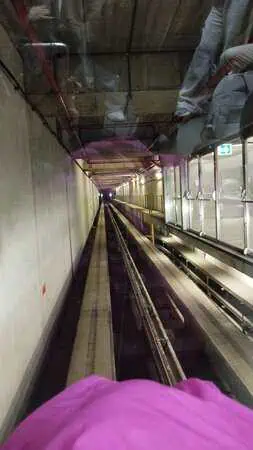
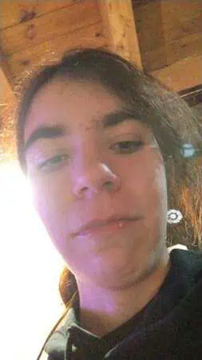
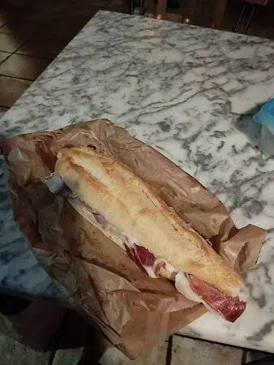

<!DOCTYPE html>
<html lang="es"></html>


<head>


<title>Dia 7 y 8</title>
<meta name="keywords" content="Atenas, Viajes, Grecia">
 <meta name="author" content="Antía" >
 <meta name="description" content="Pagina sobre el viaje a Grecia">
 <meta charset="utf-8">
 <link rel="icon" href="img/favicon-32x32.png" type="image/png">
 <link rel="stylesheet" href="estilosdias.css">
</head>
<body>
    <nav>
        <ul>
        
            <li><a href="index.html">Portada</a> </li>
            <li><a href="Dia1.html">Día 1</a> </li>
            <li><a href="Dia2.html">Día 2</a> </li>
            <li><a href="Dia3.html">Día 3</a> </li>
            <li><a href="Dia4.html">Día 4</a> </li>
            <li><a href="Dia5.html">Día 5</a> </li>
            <li><a href="Dia6.html">Día 6</a> </li>
            <li><a href="Dia7y8.html">Días 7 y 8</a> </li>
        </ul>
    </nav>
<h1>Días 7 y 8 (volviendo a Galiza)</h1>
<h2>Día 7</h2>
<article>
    <div class="foto_derecha">
        
    <p>Bueno, el día lo comenzamos desayunando y tras esto fuimos 
        a recoger nuestras maletas y bolsas para coger el autobús al
         aeropuerto.
    </p>
    
    </div>
</article>
<article>
    <p>Ahí los del primer grupo facturaron las maletas,
         los del segundo lo íbamos a hacer pero no nos
          dejaron facturarlas
          hasta las tres de la tarde, básicamente teníamos que llevar 
          las maletas por todo el aeropuerto hasta que nos dejaran 
          facturar, con suerte Jesica se quedo 
         revisando las maletas de algunos para darnos más libertad.</p>
</article>
<article>
    <p>Ese día comí sola en el Mcdonalds del 
        aeropuerto, no es lo mejor pero fue lo que se me 
        ocurrió en ese momento; tras eso facturamos por fin las 
        maletas ,pasamos los controles y estuvimos esperando hasta 
        las 8(hora ateniense) para el vuelo.
    </p>
</article>
<article>
    <p>Nos compramos una pequeña cena y
         fuimos a donde cogeriamos el avion , estavamos 
         esperando ahí pero resulta que entre que el avión llegó
          tarde y los pasajeros tardaron en bajarse salimos con una
           hora de retraso.
    </p>
</article>
<article>
<div class="foto_izquierda">
    
    <p>Finalmente nos subimos al avión,mientras esperábamos
         (ya dentro del avión) nos llego un mensaje de los del
          primer grupo diciendo que se iban ya en el autobús ,
          en ese momento pensamos que era una broma de mal gusto
           y no lo tuvimos en cuenta y salimos en dirección Madrid,
            al principio el vuelo fue tranquilo (excepto que yo estaba
             bastante enferma), pero eso cambiaría en una de las 
             ocasiones que tuve que ir al baño, no daré muchos detalles
              pero mientras estaba ahí escuche la señal de 
              cinturones y tuve que volver lo más rápido posible a
               mi sitio.
    </p>
</div>
</article>
<article>
    <p>Esa no sería la única vez que habría turbulencias en el vuelo,
         esto se repitió 3 veces a lo largo de las tres horas del 
         vuelo; el último de los tramos fue sin duda el peor ,las 
         turbulencias duraron 20 minutos.
    </p>
    
</article>
<article>
   <div class="foto_derecha">
     
    <p>   Finalmente tras tres horas
         llegamos a Madrid a las 11:45 de la noche;
          ahí para nuestra sorpresa nos dimos cuenta de que
           el primer grupo ya no estaba ahí, lo de que se iban
            antes no era una broma, tras esto tuvimos que ir en
             una especie de metro a buscar las maletas que estaban 
             en otra terminal, cuando ya las tuvimos fuimos a buscar
              un poco de comida para el trayecto. <br>
              La verdad es que lo del primer grupo nos
               pilló muy por sorpresa.
               


    </p>
    
      

   
   </div>
</article>
<h2>Día 8</h2>
<article>
    <p>Después de recorrer gran parte de la terminal de las maletas 
        cogimos el bus y comenzamos a ir dirección Vigo, 
        lo único bueno de que el otro grupo se hubiera ido 
        antes era que teníamos más espacio para nosotros,
         fue subirnos y el bus se sumió en el silencio yo me 
         quede dormida en dos asientos tapada con la bandera de Galiza.
    </p>
</article>
<article>
     <div class="foto_izquierda">
       
      
    <p>Tras dormir 1 hora y media  de las 3 del trayecto eran las 4 de 
        la mañana y teníamos que hacer una parada para comer algo y
         hacer nuestras necesidades, comimos en un bar que estaba 
         literalmente en medio de la nada,perdido por Castilla, yo
          estaba agotada y aparte resfriada pero bueno al menos comimos
           algo, cuando terminamos volvimos al bus y yo me volví a dormir 
           (una vez más tapandome con la bandera de Galiza) . <br> 
           Debí de 
           dormir unas 2-3 horas (que me sentaron de maravilla) pues me
            fui a dormir en Castilla y me desperté en Galiza(que épico) ,
             me desperté cuando ya estábamos llegando a Vigo , llegamos
              al aeropuerto y me vinieron a
         buscar mis padres, poniendo fin a esta aventura.</p>
      
     </div>
</article>
<article>
    <p>Estos últimos días fueron 
        sin lugar a dudas los más largos, en parte porque el viernes
         tuve que estar todo el dia en el aeropuerto,llegamos tarde 
         a Madrid y digamos que si bien los asientos del bus eran 
         bastante cómodos no son el mejor lugar para dormir; 
         en conclusión este viaje estuvo lleno de grandes momentos,
         algunos buenos ,otros no tan buenos pero fue una verdadera 
         experiencia que me 
         gustaría repetir, sin más yo me despido,nos vemos
          en el siguiente blog… <br>
        μέχρι την επόμενη φορά
        </p>
</article>


</body>